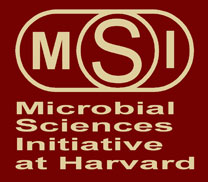

News Archives : 2012 : On April 14th, 2012: 9th Annual Microbial Sciences Initiative (MSI) Symposium Explores the Richest Biological Reservoir on Earth:The Microbial World
by Karen Lachmayr
March 29, 2012
Microbes (including bacteria, viruses, fungi, and protists) are ubiquitous on earth and affect every part of our lives. Yet they are mostly invisible, and the vast majority of microbes are still unknown to us. On Saturday, April 14th, eight prominent microbial scientists hailing from a wide variety of disciplines will share their investigations into these enigmatic microbes during the Ninth Annual Microbial Sciences Symposium. This all-day event, which is free and open to the public, is hosted by the Harvard MSI and will be held in the Radcliffe Gymnasium at the Radcliffe Institute for Advanced Studies on the Cambridge campus.
The MSI at Harvard is an interdisciplinary program (spanning the fields of molecular biology, engineering, physics, evolutionary biology, genetics, environmental microbiology and microbial ecology) focused on understanding the microbial world. Co-directed by Colleen Cavanaugh (OEB) and Roberto Kolter (Microbiology and Immunobiology, HMS), the MSI links researchers in FAS, SEAS, HMS, HSDM, and HSPH. The Microbial Sciences Symposium is the largest and most visible event that MSI sponsors, and its aim is to stimulate discussion among members of the scientific community and help strengthen integrative science programs.
Symposium topics reflect the enormous value MSI places on interdisciplinary research. At this year’s event, Kristala Prather, from MIT’s department of Chemical Engineering, will discuss the engineering of microbes for the synthesis of novel, value-added biochemicals. HMS’s Marcia Goldberg will talk about the integration of movement and immune evasion by pathogenic bacteria. Also from HMS, Thomas Bernhardt will tell the unfolding story of bacterial cell division. Steven Gross, from the University of California at Irvine, will reveal a surprising interplay between lipid droplets, histones, and bacteria. MCB’s own Andrew Murray will discuss the social biology of yeast. Joseph Heitman (Duke University) will provide a mycologist’s prospective on the evolution of sexual reproduction. Geobiologist David Johnston (EPS), will explain what his research on sulfate reducers can tell us about earth’s history. The impact of climate change on soil microbial communities will be the topic of Janet Jansson’s (University of California at Berkeley) lecture.
The MSI Symposium begins on April 14th at 8:30 am with a light breakfast followed by the lecture series. The audience is free to explore the Harvard Square area for lunch from 12:00 until 2:00 pm. At 5:00 pm the MSI is hosting a catered reception for symposium speakers and participants.
[March 28, 2012]

{kind=link}